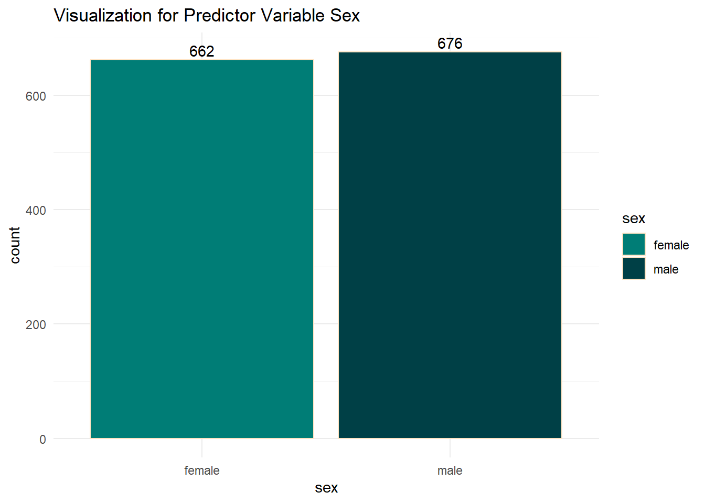

install.packages(c("corrplot","ggplot2","tidyr","dplyr","readr","knitr"))HEALTH ANALYTICS WITH R

INTRODUCTION TO HEALTH ANALYTICS WITH R ⚕️
Health Analytics is a rapidly growing field that leverages data analysis to improve healthcare outcomes, optimize operations, and inform policy decisions. By analyzing health-related data, we can uncover patterns, trends, and insights that can lead to better patient care, cost management, and overall health system efficiency.
In this project, I use R, a powerful statistical programming language, to analyze a dataset containing various health-related variables. The dataset includes information on individuals’ age, sex, body mass index (BMI), number of children, smoking status, region of residence, and insurance charges. The goal is to explore how these factors influence health insurance costs and identify key drivers of these costs.
INSTALL NECESSARY PACKAGES üì¶
The install.packages function in R is used to install one or more packages from CRAN (the Comprehensive R Archive Network). The codeblock instruction is to install five packages: corrplot, ggplot2, tidyr, dplyr, and readr. Here’s a brief description of each:
corrplot: This package is used for visualizing correlation matrices. It provides a variety of methods to display correlations, making it easier to understand the relationships between variables in your dataset.ggplot2: A powerful and widely-used package for data visualization. It implements the grammar of graphics, allowing you to create complex and aesthetically pleasing plots with a high degree of customization.tidyr: This package helps in tidying your data. It provides functions to reshape and clean your data, making it easier to work with and analyze. Key functions includegather,spread,separate, andunite.dplyr: A package for data manipulation. It provides a set of functions (verbs) that help you perform common data manipulation tasks such as filtering, selecting, mutating, summarizing, and arranging data. It’s known for its simplicity and speed.readr: This package is used for reading rectangular data (like CSV files) into R. It provides functions that are faster and more convenient than the base R functions for reading data.knitr: This package is used for dynamic report generation in R. It allows to integrate R code with LaTeX, HTML, Markdown, and other formats, making it easier to create reproducible reports and documents that include both code and output.
LOAD LIBRARIES
library(corrplot)corrplot 0.92 loadedlibrary(ggplot2)
library(tidyr)
library(dplyr)
Attaching package: 'dplyr'The following objects are masked from 'package:stats':
filter, lagThe following objects are masked from 'package:base':
intersect, setdiff, setequal, unionlibrary(readr)
library(tidyverse)── Attaching core tidyverse packages ──────────────────────── tidyverse 2.0.0 ──
✔ forcats 1.0.0 ✔ stringr 1.5.1
✔ lubridate 1.9.2 ✔ tibble 3.2.0
✔ purrr 1.0.1 ── Conflicts ────────────────────────────────────────── tidyverse_conflicts() ──
✖ dplyr::filter() masks stats::filter()
✖ dplyr::lag() masks stats::lag()
ℹ Use the conflicted package (<http://conflicted.r-lib.org/>) to force all conflicts to become errorslibrary(knitr)By calling these packages, one is equipped with powerful tools to clean, manipulate, visualize, and analyze the health dataset effectively.
CHECK WORKING DIRECTORY
getwd()[1] "C:/Users/SAMMY/Desktop/Portfoliooo/Sammy Odeyemi/R Projects/Health Analysis"The getwd() function in R stands for “get working directory.” It returns the current working directory of the R session. The working directory is the folder where R reads and saves files by default. Knowing the current working directory is important because it helps to understand where your files are being stored and accessed from.
SET WORKING DIRECTORY
setwd("C:/Users/SAMMY/Desktop/Portfoliooo/Sammy Odeyemi/R Projects/Health Analysis")The setwd() function in R sets the working directory to a specified path. This means R will read and write files from this directory by default.
Note
As in your Desktop/Workspace, the Working Directory would be different!
IMPORT HEALTH DATASET AND VIEW
healthdata<-read_csv("Health-Insurance-Dataset.csv")Rows: 1338 Columns: 7
── Column specification ────────────────────────────────────────────────────────
Delimiter: ","
chr (3): sex, smoker, region
dbl (4): age, bmi, children, charges
ℹ Use `spec()` to retrieve the full column specification for this data.
ℹ Specify the column types or set `show_col_types = FALSE` to quiet this message.kable(head(healthdata,20))| age | sex | bmi | children | smoker | region | charges |
|---|---|---|---|---|---|---|
| 19 | female | 27.900 | 0 | yes | southwest | 16884.924 |
| 18 | male | 33.770 | 1 | no | southeast | 1725.552 |
| 28 | male | 33.000 | 3 | no | southeast | 4449.462 |
| 33 | male | 22.705 | 0 | no | northwest | 21984.471 |
| 32 | male | 28.880 | 0 | no | northwest | 3866.855 |
| 31 | female | 25.740 | 0 | no | southeast | 3756.622 |
| 46 | female | 33.440 | 1 | no | southeast | 8240.590 |
| 37 | female | 27.740 | 3 | no | northwest | 7281.506 |
| 37 | male | 29.830 | 2 | no | northeast | 6406.411 |
| 60 | female | 25.840 | 0 | no | northwest | 28923.137 |
| 25 | male | 26.220 | 0 | no | northeast | 2721.321 |
| 62 | female | 26.290 | 0 | yes | southeast | 27808.725 |
| 23 | male | 34.400 | 0 | no | southwest | 1826.843 |
| 56 | female | 39.820 | 0 | no | southeast | 11090.718 |
| 27 | male | 42.130 | 0 | yes | southeast | 39611.758 |
| 19 | male | 24.600 | 1 | no | southwest | 1837.237 |
| 52 | female | 30.780 | 1 | no | northeast | 10797.336 |
| 23 | male | 23.845 | 0 | no | northeast | 2395.172 |
| 56 | male | 40.300 | 0 | no | southwest | 10602.385 |
| 30 | male | 35.300 | 0 | yes | southwest | 36837.467 |
healthdata <- read_csv("Health-Insurance-Dataset.csv"): Reads the CSV file named “Health-Insurance-Dataset.csv” into a data frame calledhealthdata. This function is part of thereadrpackage and is used to import data into R for analysis.View(healthdata): Opens a spreadsheet-like view of thehealthdatadata frame in RStudio, allowing to inspect the data visually.
DISPLAY STRUCTURE OF DATAFRAME
str(healthdata)spc_tbl_ [1,338 × 7] (S3: spec_tbl_df/tbl_df/tbl/data.frame)
$ age : num [1:1338] 19 18 28 33 32 31 46 37 37 60 ...
$ sex : chr [1:1338] "female" "male" "male" "male" ...
$ bmi : num [1:1338] 27.9 33.8 33 22.7 28.9 ...
$ children: num [1:1338] 0 1 3 0 0 0 1 3 2 0 ...
$ smoker : chr [1:1338] "yes" "no" "no" "no" ...
$ region : chr [1:1338] "southwest" "southeast" "southeast" "northwest" ...
$ charges : num [1:1338] 16885 1726 4449 21984 3867 ...
- attr(*, "spec")=
.. cols(
.. age = col_double(),
.. sex = col_character(),
.. bmi = col_double(),
.. children = col_double(),
.. smoker = col_character(),
.. region = col_character(),
.. charges = col_double()
.. )
- attr(*, "problems")=<externalptr> str(healthdata): Provides a compact, human-readable summary of the structure of thehealthdatadata frame, including the type of each variable and a preview of the data.VISUALIZATIONS üìä
VISUALIZE PREDICTOR VARIABLE AGE
ggplot(healthdata,aes(x=age)) +
geom_histogram(fill="#004046",binwidth = 5,color="bisque") +
ggtitle("Visualization for Predictor Variable Age") +
theme_minimal()This block of code creates a histogram to visualize the distribution of the age variable in the healthdata data frame. The histogram uses bins of 5 years to group the ages, and it is styled with specific fill and border colors. The plot is titled “Visualization for Predictor Variable Age” and uses a minimal theme for a clean look.
This visualization helps in understanding the distribution of ages in the dataset, which can be useful for identifying patterns or anomalies in the data.
VISUALIZE PREDICTOR VARIABLE SEX
ggplot(healthdata,aes(x=sex, fill = sex)) +
geom_bar(color="bisque") +
scale_fill_manual(values = c("male"="#004046","female"="#007d76")) +
geom_text(aes(label = ..count..), stat = "count", vjust = -0.3) +
ggtitle("Visualization for Predictor Variable Sex") +
theme_minimal()Warning: The dot-dot notation (`..count..`) was deprecated in ggplot2 3.4.0.
ℹ Please use `after_stat(count)` instead.
This block of code creates a bar plot to visualize the distribution of the sex variable in the healthdata dataset. The bars are colored based on sex, with custom colors for “male” and “female.” The plot includes count labels above each bar, a title “Visualization for Predictor Variable Sex,” and uses a minimal theme for a clean look.
This visualization helps in understanding the distribution of sexes in the dataset, which can be useful for identifying patterns or anomalies in the data.
VISUALIZE PREDICTOR VARIABLE BMI
ggplot(healthdata, aes(x = bmi)) +
geom_histogram(binwidth = 2, fill = "#004046", color = "bisque") +
labs(title = "BMI Distribution", x = "BMI", y = "Count") +
theme_minimal() This block of code creates a histogram to visualize the distribution of the bmi variable in the healthdata dataset. The histogram uses bins of 2 units to group the BMI values and is styled with a specific fill color and border color. The plot is titled “BMI Distribution” and uses a minimal theme for a clean look.
This visualization helps in understanding the distribution of BMI values in the dataset, which can be useful for identifying patterns or anomalies in the data.
VISUALIZE PREDICTOR VARIABLE CHILDREN
ggplot(healthdata, aes(x = factor(children))) +
geom_bar(fill = "#004046", color="bisque") +
labs(title = "Number of Children", x = "Children", y = "Count") +
geom_text(aes(label = ..count..), stat = "count", vjust = -0.3) +
theme_minimal() This block of code creates a bar plot to visualize the distribution of the children variable in the healthdata dataset. The bars are colored with a specific fill and border color. The plot includes count labels above each bar, a title “Number of Children,” and uses a minimal theme for a clean look.
This visualization helps in understanding the distribution of the number of children in the dataset, which can be useful for identifying patterns or anomalies in the data.
VISUALIZE PREDICTOR VARIABLE SMOKER
ggplot(healthdata, aes(x = smoker, fill = smoker)) +
geom_bar() +
labs(title = "Smoker vs. Non-Smoker", x = "Smoker", y = "Count") + scale_fill_manual(values = c("yes" = "antiquewhite4", "no" = "#004046")) + geom_text(stat = "count", aes(label = ..count..), vjust = -0.5) +
theme_minimal() This block of code creates a bar plot to visualize the distribution of the smoker variable in the healthdata dataset. The bars are colored based on smoking status, with custom colors for “yes” and “no.” The plot includes count labels above each bar, a title “Smoker vs. Non-Smoker,” and uses a minimal theme for a clean look.
This visualization helps in understanding the distribution of smokers and non-smokers in the dataset, which can be useful for identifying patterns or anomalies in the data.
VISUALIZE PREDICTOR VARIABLE REGION
ggplot(healthdata, aes(x = region, fill = region)) +
geom_bar() +
labs(title = "Distribution by Region", x = "Region", y = "Count") + scale_fill_manual(values = c("southwest" = "darkorchid", "southeast" = "#004046", "northwest" = "antiquewhite4", "northeast" = "darkgoldenrod")) +
geom_text(stat = "count", aes(label = ..count..), vjust = -0.5) +
theme_minimal() This block of code creates a bar plot to visualize the distribution of the region variable in the healthdata dataset. The bars are colored based on the region, with custom colors for “southwest,” “southeast,” “northwest,” and “northeast.” The plot includes count labels above each bar, a title “Distribution by Region,” and uses a minimal theme for a clean look.
This visualization helps in understanding the distribution of regions in the dataset, which can be useful for identifying patterns or anomalies in the data.
VISUALIZE PREDICTOR VARIABLE CHARGES
ggplot(healthdata, aes(x = charges)) +
geom_density(fill = "#004046", alpha = 0.9, color="bisque") +
labs(title = "Density of Charges", x = "Charges", y = "Density") + theme_minimal() This block of code creates a density plot to visualize the distribution of the charges variable in the healthdata dataset. The density plot is styled with a specific fill color, transparency level, and border color. The plot is titled “Density of Charges” and uses a minimal theme for a clean look.
This visualization helps in understanding the distribution of charges in the dataset, which can be useful for identifying patterns or anomalies in the data.
REPORT
Piecing it altogether, we make a report off of the charts generated in RStudio using the viz Tool: Power BI

DESCRIPTIVE SUMMARY
The summary() function in R provides a quick overview of the dataset, including basic statistics for each variable
summary(healthdata) age sex bmi children
Min. :18.00 Length:1338 Min. :15.96 Min. :0.000
1st Qu.:27.00 Class :character 1st Qu.:26.30 1st Qu.:0.000
Median :39.00 Mode :character Median :30.40 Median :1.000
Mean :39.21 Mean :30.66 Mean :1.095
3rd Qu.:51.00 3rd Qu.:34.69 3rd Qu.:2.000
Max. :64.00 Max. :53.13 Max. :5.000
smoker region charges
Length:1338 Length:1338 Min. : 1122
Class :character Class :character 1st Qu.: 4740
Mode :character Mode :character Median : 9382
Mean :13270
3rd Qu.:16640
Max. :63770
Interpretation of Descriptive Statistics
Age: The ages in your dataset range from 18 to 64 years, with a median age of 39. This indicates a fairly balanced distribution of ages around the middle age group.
BMI: BMI values range from 15.96 to 53.13, with a median of 30.40. The mean BMI is slightly higher at 30.66, suggesting a slight skew towards higher BMI values.
Children: The number of children ranges from 0 to 5, with a median of 1. This shows that most individuals have one or no children.
Charges: Medical charges vary widely from $1,122 to $63,770, with a median charge of $9,382. The mean charge is $13,270, indicating a right-skewed distribution with some high-cost outliers.
Sex, Smoker, Region: These are categorical variables, and their summary indicates the dataset includes diverse categories for each.
ASSUMPTION TEST ON PREDICTOR VARIABLES TO DETERMINE INDEPENDENCE USING CORRELATION COEFFICIENTS
It becomes imperative to convert non-numeric columns in the healthdata dataset to numeric values and this is essential for performing further numerical analyses and visualizations
#convert to numeric and factors, the columns that are non-numeric
healthdata$sex<-as.numeric(as.factor(healthdata$sex))
healthdata$smoker<-as.numeric(as.factor(healthdata$smoker))
healthdata$region<-as.numeric(as.factor(healthdata$region))#USING SCATTERPLOTS AND CORRELATION MATRIX
corr_matrix<- cor(healthdata[,c("age","sex","bmi","children","smoker","region","charges")])
corr_matrix age sex bmi children smoker
age 1.000000000 -0.020855872 0.109271882 0.04246900 -0.025018752
sex -0.020855872 1.000000000 0.046371151 0.01716298 0.076184817
bmi 0.109271882 0.046371151 1.000000000 0.01275890 0.003750426
children 0.042468999 0.017162978 0.012758901 1.00000000 0.007673120
smoker -0.025018752 0.076184817 0.003750426 0.00767312 1.000000000
region 0.002127313 0.004588385 0.157565849 0.01656945 -0.002180682
charges 0.299008193 0.057292062 0.198340969 0.06799823 0.787251430
region charges
age 0.002127313 0.299008193
sex 0.004588385 0.057292062
bmi 0.157565849 0.198340969
children 0.016569446 0.067998227
smoker -0.002180682 0.787251430
region 1.000000000 -0.006208235
charges -0.006208235 1.000000000In this block of code, we calculate the correlation matrix for selected variables in the healthdata dataset. This matrix helps in understanding the linear relationships between pairs of variables such as age, sex, bmi, children, smoker, region, and charges.
#Visualizing for correlation
corr_colors <- colorRampPalette(c("#E0F2F1", "#007D76"))(100)
corrplot(corr_matrix,method="color",addCoef.col = "black",col=corr_colors)Above is a color-coded plot that clearly shows the strength and direction of relationships between the variables, aiding in the identification of patterns and potential multicollinearity.
Interpretation of Correlation Matrix
Age: Positively correlated with
charges(0.299).Sex: Weak correlations with all variables.
BMI: Positively correlated with
charges(0.198) andregion(0.158).Children: Weak correlations with all variables.
Smoker: Strongly correlated with
charges(0.787).Region: Weak correlations with all variables.
Charges: Strongly correlated with
smoker(0.787), moderately withage(0.299) andBMI(0.198).
Key relationships: smoker and charges (strong), age and charges (moderate), BMI and charges (moderate). Other variables show weak correlations.
pairs(~ age + sex + bmi + children + smoker + region + charges, data = healthdata)The above chart and block of code helps in visualizing a pairwise relationship between the variables.
A scatterplot matrix is visualized, where each cell in the matrix is a scatterplot of one variable against another.
LINEAR REGRESSION MODELS FOR PREDICTOR VARIABLES
LINEAR MODEL 1
The codeblock below fits a linear regression model to predict charges based on smoker, age and bmi
Description:
Model: Predicts
chargesusingsmoker,age, andbmi.Summary: Provides coefficients, significance, R-squared, and residuals.
This helps understand how these predictors influence charges.
# Logistic regression models for predictor variables
# Age, Smoker and BMI
lm1<- lm(charges ~ smoker + age + bmi, healthdata)
summary(lm1)
Call:
lm(formula = charges ~ smoker + age + bmi, data = healthdata)
Residuals:
Min 1Q Median 3Q Max
-12415.4 -2970.9 -980.5 1480.0 28971.8
Coefficients:
Estimate Std. Error t value Pr(>|t|)
(Intercept) -35500.51 1060.50 -33.48 <2e-16 ***
smoker 23823.68 412.87 57.70 <2e-16 ***
age 259.55 11.93 21.75 <2e-16 ***
bmi 322.62 27.49 11.74 <2e-16 ***
---
Signif. codes: 0 '***' 0.001 '**' 0.01 '*' 0.05 '.' 0.1 ' ' 1
Residual standard error: 6092 on 1334 degrees of freedom
Multiple R-squared: 0.7475, Adjusted R-squared: 0.7469
F-statistic: 1316 on 3 and 1334 DF, p-value: < 2.2e-16
Interpretation of Linear Model 1
Coefficients:
Intercept: -35500.51
Smoker: +23823.68 (higher charges for smokers)
Age: +259.55 (increase per year)
BMI: +322.62 (increase per unit)
Significance: All predictors are highly significant (p < 2e-16).
Model Fit:
R-squared: 0.7475 (74.75% variability explained)
Residual Standard Error: 6092
Conclusion: Smoking, age, and BMI significantly impact charges, with smoking having the largest effect.
LINEAR MODEL 2
The codeblock below fits a linear regression model to predict charges based on smoker, age, bmi, children, region, and sex
Description:
Model: Predicts
chargesusingsmoker,age,bmi,children,region, andsex.Summary: Provides coefficients, significance, R-squared, and residuals.
# Logistic regression models for predictor variables
# Age, Smoker, children, region, sex and BMI
lm2<- lm(charges ~ smoker + age + bmi + children + region + sex, healthdata)
summary(lm2)
Call:
lm(formula = charges ~ smoker + age + bmi + children + region +
sex, data = healthdata)
Residuals:
Min 1Q Median 3Q Max
-11343 -2807 -1017 1408 29752
Coefficients:
Estimate Std. Error t value Pr(>|t|)
(Intercept) -35151.14 1174.41 -29.931 < 2e-16 ***
smoker 23820.43 411.84 57.839 < 2e-16 ***
age 257.29 11.89 21.647 < 2e-16 ***
bmi 332.57 27.72 11.997 < 2e-16 ***
children 479.37 137.64 3.483 0.000513 ***
region -353.64 151.93 -2.328 0.020077 *
sex -131.11 332.81 -0.394 0.693681
---
Signif. codes: 0 '***' 0.001 '**' 0.01 '*' 0.05 '.' 0.1 ' ' 1
Residual standard error: 6060 on 1331 degrees of freedom
Multiple R-squared: 0.7507, Adjusted R-squared: 0.7496
F-statistic: 668.1 on 6 and 1331 DF, p-value: < 2.2e-16
Interpretation of Linear Model 2
Coefficients:
Smoker: +23820.43 (higher charges)
Age: +257.29 (per year)
BMI: +332.57 (per unit)
Children: +479.37 (per child)
Region: -353.64 (slight decrease)
Sex: -131.11 (not significant)
Significance: All predictors except sex are significant.
Model Fit:
R-squared: 0.7507 (75.07% variability explained)
Residual Standard Error: 6060
Conclusion: Smoking, age, BMI, children, and region significantly impact charges, with smoking having the largest effect.
LINEAR MODEL 3
The codeblock below fits a linear regression model to predict charges based on smoker, age, bmi, children and region
# Logistic regression models for predictor variables
# Age, Smoker, children, region, BMI
lm3<- lm(charges ~ smoker + age + bmi + children + region, healthdata)
summary(lm3)
Call:
lm(formula = charges ~ smoker + age + bmi + children + region,
data = healthdata)
Residuals:
Min 1Q Median 3Q Max
-11404 -2805 -992 1400 29694
Coefficients:
Estimate Std. Error t value Pr(>|t|)
(Intercept) -35321.62 1091.42 -32.363 < 2e-16 ***
smoker 23808.21 410.54 57.992 < 2e-16 ***
age 257.41 11.88 21.670 < 2e-16 ***
bmi 332.04 27.68 11.995 < 2e-16 ***
children 478.44 137.58 3.478 0.000522 ***
region -353.45 151.88 -2.327 0.020104 *
---
Signif. codes: 0 '***' 0.001 '**' 0.01 '*' 0.05 '.' 0.1 ' ' 1
Residual standard error: 6058 on 1332 degrees of freedom
Multiple R-squared: 0.7507, Adjusted R-squared: 0.7498
F-statistic: 802.2 on 5 and 1332 DF, p-value: < 2.2e-16
Interpretation of the Linear Regression Model
Coefficients:
Smoker: +23808.21 (higher charges)
Age: +257.41 (per year)
BMI: +332.04 (per unit)
Children: +478.44 (per child)
Region: -353.45 (slight decrease)
Significance:
- All predictors are significant (
p < 0.05).
Model Fit:
R-squared: 0.7507 (75.07% variability explained)
Residual Standard Error: 6058
Conclusion:
- Smoking, age, BMI, children, and region significantly impact charges, with smoking having the largest effect.
RESIDUALS AND FITTED VALUES FOR LINEAR MODEL 1
The codeblock below calculates the residuals and fitted values for the linear regression model lm1 and stores them in a data frame:
#Calculate residuals and fitted values for residuals
residualslm1<-data.frame(residuals=resid(lm1), Fitted=fitted(lm1))Description:
Residuals: Differences between observed and predicted values from
lm1.resid(lm1): Extracts residuals fromlm1.
Fitted Values: Predicted values from
lm1.fitted(lm1): Extracts fitted values fromlm1.
#Create Visuals for Residuals and Fitted Values
ggplot(residualslm1, aes(Fitted,residuals))+
geom_point(aes(color="#004046")) +
geom_hline(yintercept = 0,linetype="dashed",color="#004046")+
labs(title = "Residuals vs Fitted Plot", x="Fitted Values",y="Residuals")+ theme_minimal()
Interpretation of the Residuals vs Fitted Plot
The plot visualizes the residuals (differences between observed and predicted values) against the fitted values from your linear regression model.
Key Observations:
No Clear Pattern: The residuals are scattered randomly around the horizontal dashed line at zero, indicating no obvious pattern.
Homoscedasticity: The spread of residuals appears consistent across all fitted values, suggesting constant variance (homoscedasticity).
Outliers: There are a few points far from the zero line, which might be outliers.
Conclusion:
The random scatter and consistent spread suggest that the model’s assumptions are reasonably met.
The lack of a clear pattern indicates that the model does not suffer from major issues like non-linearity.
Q-Q Plot of Residuals
The Q-Q plot compares the residuals’ quantiles to a normal distribution’s quantiles.
#QQ Plot of Residuals
ggplot(residualslm1, aes(sample=residuals))+ stat_qq(color="#004046")+ stat_qq_line(color="#004046")+ labs(title = "Q-Q Plot of Residuals", x="Theoretical Quantiles",y="Sample Quantiles")+ theme_minimal()
Interpretation:
Central Points: Residuals are approximately normally distributed.
Deviations at Extremes: More extreme residuals than expected, indicating heavier tails.
Conclusion:
The residuals deviate from normality at the extremes, suggesting potential issues with the model’s assumptions. Consider transformations or alternative models.
Source file
Access source file here
OVERALL CONCLUSION
In this health analytics project, I explored various factors affecting medical charges using a dataset that included variables such as age, BMI, number of children, smoking status, region, and charges. Here’s a summary of our key findings and analyses:
- Data Visualization:
ggplot2was used to create visualizations that highlighted the relationships between different variables. For example, it was observed that smokers tend to have higher medical charges compared to non-smokers.The
corrplotpackage helped to visualize correlations between variables, revealing significant relationships, such as the positive correlation between BMI and charges.
- Data Transformation and Cleaning:
- Using
dplyrandtidyr, the data was transformed to ensure it was ready for analysis. This creating new variables where necessary.
- Linear Regression Modeling:
Linear regression modeling was performed to predict medical charges based on various predictor variables. The models showed that age, BMI, smoking status, and region are significant predictors of medical charges.
The Q-Q plot of residuals indicated that while the central residuals were approximately normally distributed, there were deviations at the extremes, suggesting potential issues with the model’s assumptions.
- Model Evaluation:
- I evaluated the model’s performance and identified areas where it could be improved. The deviations in the Q-Q plot suggest that there might be need to consider transformations or alternative models to better fit the data.
FINAL THOUGHTS:
This analysis provides valuable insights into the factors influencing medical charges. The findings can help in understanding the cost drivers in healthcare and potentially inform policy decisions. Future work could involve exploring non-linear models or other advanced techniques to improve prediction accuracy.